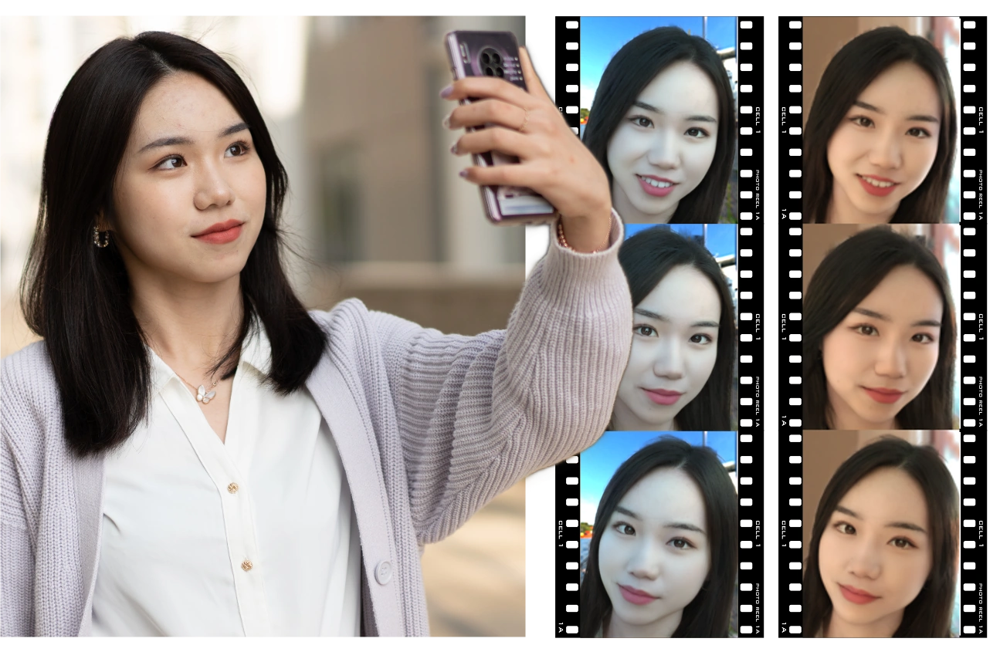

Neural Video Portrait Relighting in Real-time via Consistency Modeling
Research overview
This work changes the lighting of portrait video while preserving consistency across frames. A neural model separates structure from illumination and learns from a dynamic dataset with individually controlled lights. Semantic, temporal, and lighting constraints help maintain stable appearance during motion, supporting interactive portrait relighting, including on mobile devices.
Summary · Read original ↗01 / 01
